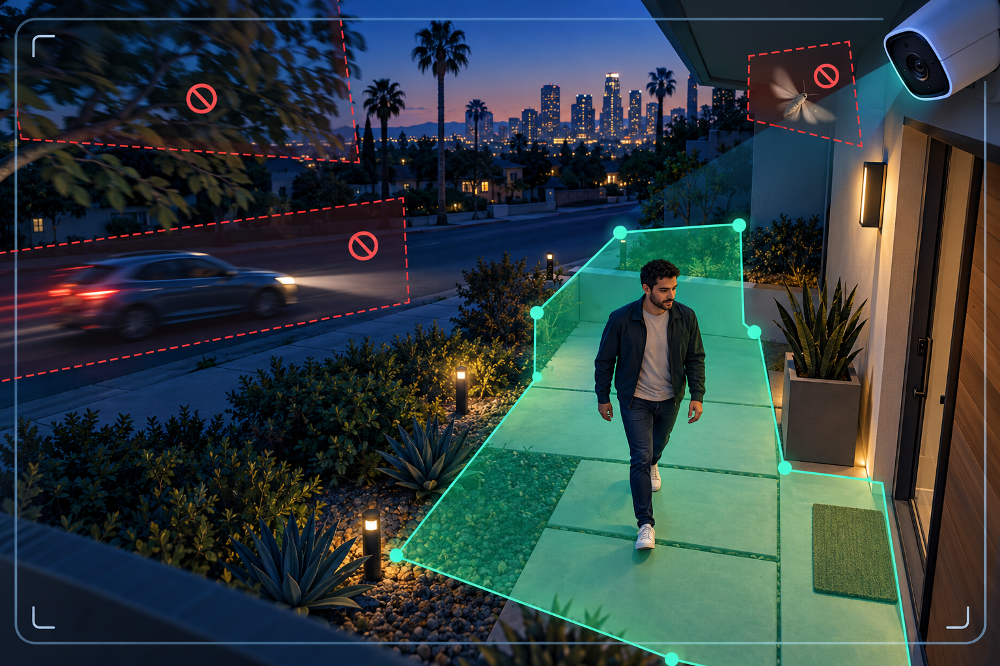

The fastest way to reduce false security-camera alerts is to identify what caused each alert, tighten the detection area around the place you actually care about, and then change one filter at a time. Start with zones before lowering sensitivity. A sensitivity setting that is too low can hide useful activity along with the nuisance alerts.
Menu names vary by camera and recorder. Look for settings such as activity zone, motion zone, smart detection, object type, minimum object size, or notification schedule. The workflow below works whether you manage cameras from a phone app, a DVR or NVR, or a web interface.
Do not start by moving every slider. Review a sample of recent events and write down what appears at the moment each alert begins. Sort the triggers into a few practical groups:
Also note the time and conditions. An alert that appears only after dark points toward headlights, insects, infrared reflection, or low-light image noise. One that appears on windy afternoons points toward vegetation or a loose object in the scene. This short review tells you whether the right fix is a zone, object filter, schedule, lighting change, cleaning, or camera repositioning.
Draw the active zone around the doorway, walkway, driveway entrance, gate, register area, loading point, or other place where action matters. Keep the boundary away from a busy street or sidewalk rather than tracing it right to the edge. Google's official Nest guidance says smaller, more precise activity zones generally produce more accurate alerts, while Axis recommends keeping an include area away from nearby roads and sidewalks.
If the software supports exclusion zones, mask small problem areas inside the larger active region: the top of a swaying tree, a reflective window, a digital screen, or the strip of road visible through a gate. Ubiquiti's Protect documentation specifically lists high-traffic areas, moving foliage, screens, and reflections as uses for exclusion zones.
After saving the zone, walk across every important approach. Test the far edge as well as the center. A zone that looks correct on a still image can miss someone whose detection point falls just outside the boundary.
Basic video motion reacts to changes in the image. Depending on the scene, that can include shadows, foliage, animals, headlights, rain, or a moth close to the lens. Compatible systems may offer person, vehicle, animal, package, line-crossing, or other object-based events.
For a front door, person and package notifications may be more useful than alerts for all motion. For a parking entrance, person and vehicle events may make sense. At a back gate, a directional line-crossing rule may be more selective than a large motion zone. Keep ordinary recording enabled according to your needs; you can often narrow phone notifications without narrowing all recorded video. Google notes, for example, that its Activity Zones affect alerts while the camera can continue streaming its full view. Confirm how your own system separates detection, notification, and recording before changing it.
If zones and object types do not solve the problem, use the more specific filters your system provides:
Axis advises configuring one ignore filter at a time and checking it visually before adding another. That is good practice for any brand: make one change, save it, and test it under the conditions that caused the problem. If you move several sliders at once, you will not know which change helped or whether an important event has been filtered out.
Software cannot completely compensate for a poor view. Physical corrections often give the most durable result:
If the unwanted alerts mostly happen after dark, use our night-vision troubleshooting guide to check infrared glare, contamination, motion blur, and backlighting before reducing detection settings.
A schedule is useful when the detection is correct but the notification is unnecessary. A business may want exterior alerts after closing while keeping recording active all day. A home may need backyard notifications while everyone is away but fewer routine alerts when residents are outside.
Check each user's notification settings separately. Some systems let different phones receive different event types or schedules. Test that the recorder still captures what you expect; disabling a phone alert and disabling event recording are different actions on many systems, but the exact behavior depends on the product.
Keep a few known test clips until the tuning is complete. They give you a repeatable way to compare whether alerts became more useful without weakening coverage.
Repositioning or upgrading becomes reasonable when the important area is too small or too distant in the image, the camera cannot separate the entrance from unavoidable traffic, the mount is exposed to constant vibration, or the system offers only broad pixel-motion detection and cannot produce dependable alerts for the scene.
A better camera is not automatically a better alert. Lens choice, mounting height, viewing angle, lighting, zones, and recording settings all work together. Before buying new hardware, compare the actual field of view and the event tools you need. Our camera-placement guide and camera-system upgrade service explain what to review.
Tech Secure 360 can review camera placement, detection zones, recorder settings, phone notifications, night images, and older hardware for homes and businesses across Greater Los Angeles. A useful service visit should end with tested alerts and a clear explanation of what each setting controls. Request an estimate or call (747) 336-2737.
Tell us about your place and we'll respond within one business day with a tailored plan and pricing. Or call us right now.
Your request is in. A Tech Secure 360 specialist will reach out within one business day. Need help now? Call (747) 336-2737.